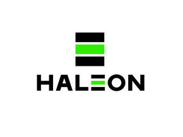

Trade Mark Journal No.2025/011 14 March 2025
UK00004168688 4 March 2025 (3,5,9,10,21,35,44)

- Class 3
- Cleaning, polishing, scouring and abrasive preparations; perfumery; essential oils; skin creams, skin and hair lotions, skin gels, skin ointments, cold cream; dentifrices and mouthwashes not for medical purposes; breath fresheners; dental gels; toothpaste; tooth bleaching preparations, tooth polishing preparations, tooth whitening preparations and accelerators, cosmetic tooth stain removal preparations; non-medicated oral care preparations; preparations for cleaning, washing, polishing and deodorizing dentures.
- Class 5
- Pharmaceutical and medicinal preparations and substances, excluding surgical and/or professional vision care preparations and substances; therapeutic agents (medical), excluding surgical and/or professional vision care agents; adhesive patches for medical purposes, excluding adhesive patches for use in the surgical and/or professional vision care fields; adhesive patches for surgical purposes, excluding adhesive patches for use in the surgical and/or professional vision care fields; adhesive patches incorporating a pharmaceutical preparation, excluding adhesive patches for use in the surgical and/or professional vision care fields; medicated patches, plasters and dressings for the treatment of skin diseases, conditions and disorders; vaccines; vitamins, minerals and food supplements; dietary preparations; dietetic substances including foods and drinks adapted for medical use; foods for infants and invalids; weight loss preparations; medicated oral care preparations, namely medicated toothpastes, medicated mouthwashes; medicated bleaching preparations; preparations for sterilizing dentures; medicated chewing gum and lozenges for dental hygiene; denture adhesives, denture fixatives, medicated dental gels; smoking cessation preparations.
- Class 9
- Electronic monitoring devices; electric measuring apparatus; all the aforementioned goods excluding surgical and/or professional vision care products or for use in the surgical and/or professional vision care fields.
- Class 10
- Surgical and medical apparatus and instruments, excluding surgical and/or professional vision care products; dental care apparatus; dental trays; nasal dilators; diagnostic equipment; medical testing apparatus and instruments for use in the diagnosis and treatment of diseases, conditions and disorders; artificial skin; suture materials; biopsy punches; medical diagnostic testing apparatus for skin; medical instruments for allergy tests; transcutaneous electrical nerve stimulation (TENS) devices; devices for posture improvement; sleep monitoring devices; electromagnetic therapy devices; infrared therapy devices; ultra-sound therapy devices; laser therapy devices; diagnostic apparatus for medical purposes; electronic instruments for medical use; thermometers for medical use; cooling patches for medical purposes; all the aforementioned goods excluding surgical and/or professional vision care products.
- Class 21
- Toothbrushes, electric toothbrushes, floss for dental purposes, toothpicks, toothpick holders (not of precious metal) and plastic containers for holding toothbrushes.
- Class 35
- Promotional and advertising services; provision of the aforementioned services on-line, via cable and/or the Internet; provision of promotional and advertising information relating to pharmaceutical, medical, healthcare and fitness products through an on-line computer network; retail or wholesale services for pharmaceutical, veterinary and sanitary preparations and medical supplies; retail or wholesale services for pharmaceuticals; all the aforementioned services excluding services relating to surgical and/or professional vision care.
- Class 44
- Medical, hygienic and beauty care; healthcare services; provision of medical information and services; information provided to patients and healthcare professionals concerning pharmaceutical products, vaccines, medical diseases and disorders and related treatments via the Internet; gene and cell therapy; medical and psychological counselling services; medical and health care services; all the aforementioned services excluding services relating to surgical and/or professional vision care.
Haleon UK IP Limited
Representative: Haleon UK Services Limited